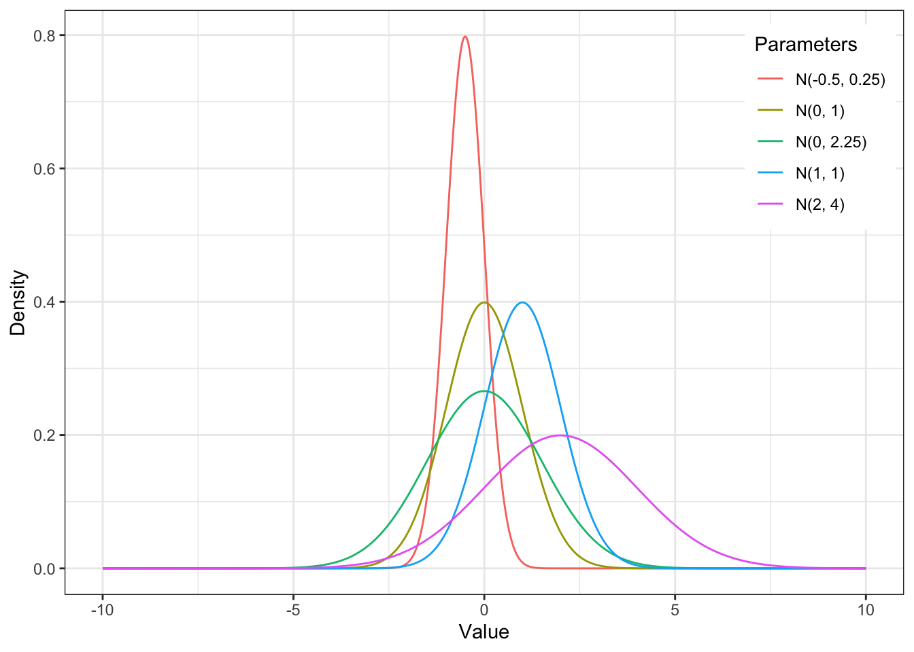
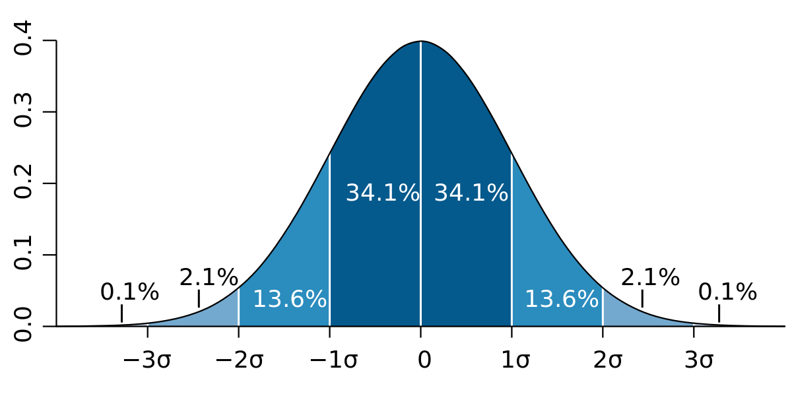

5 Нормальное распределение
5.1 Центральная предельная теорема
Центральная предельная теорема – важное понятие в статистике, применимой к исследованиям в социальных науках. Мы уже выучили, что переменные, с которыми мы работаем – это случайные величины [#random-variable]. Именно этот факт позволяет нам вычислять могие параметры по тем формулам, которые мы используем: если бы мы работали не с случайными величинами, у нас была бы совсем другая статистика (кажется, куда более сложная)!
В общем виде, ее можно сформулировать так: случайная величина, подверженная влиянию многих факторов, чье значение нельзя предсказать точноо, распределена нормально.
Из нее есть важное следствие: > Если мы проводим много одинаковых исследований, то выборочные средние этих исследований будут распределены нормально.
samplemeans <- replicate(1000, mean(rnorm(100, mean = 100, sd = 15)))
hist(samplemeans, breaks = 30)
## [1] 100.0147## [1] 1.424479Стандартное отклонение распределение выборочных срених называется стандартной ошибкой среднего (standard error of the mean (s.e.m. или se) и вычисляется по формуле \(\sigma_{\overline{x}}= \frac{\sigma} {\sqrt{n}}\) или, используя выборочное стандартное отклонение по одной выборке \(s_{\overline{x}}= \frac{s} {\sqrt{n}}\)
5.3 Нормальное распределение и его свойства
Мы уже обсуждали нормальное распределение, когда говорили про распределения в целом [# Распределения]. Это вероятностный закон, где заданным значениям признака приводится в соответствие вероятность встретить признак с таким значением, выраженный по формуле \(P(x) = \frac{e^{-(x - \mu)^{2}/(2\sigma^{2}) }} {\sigma\sqrt{2\pi}}\)
Часто можно увидеть такую запись, обозначающую нормальное распределение: \(\sim \mathcal{N}(\mu, \, \sigma^2)\)

Нормальное распределение интересно нам как минимум потому, что многие признаки, которые мы исследуем, согласно центральной предельной теореме распределены номрально. Помимо этого нормальное распределение обладает рядом свойств:
- симметрично
- унимодально (только одна мода)
- отклонения от среднего подчинаются вероятностному закону: знаем, сколько процентов данных содержится в скольких стандартных отклонения от среднего

- в пределах одного стандартного отклонения от среднего значения лежит 68% значений — это очень частотные значения;
- в пределах двух стандартных отклонений от среднего значения лежит 95% значений — бо́льшая часть выборки;
- в пределах трех стандартных отклонений от среднего значения лежит практически 100% выборки — то есть вся выборка.